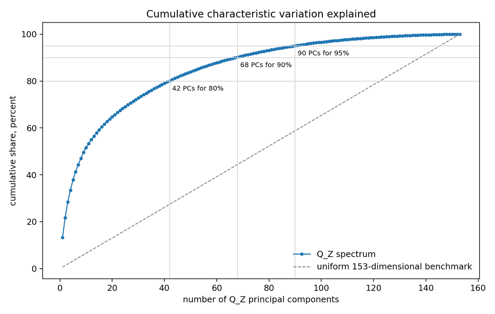

为什么尺子很重要
已实测 · 项目 · 研究证据 · 2026 年 6 月 · 资料来源：研讨会幻灯片 When Geometry Matters（2026 年 6 月 24 日）与报告 Statistical Factor Models Carry a Hidden Ruler（2026 年 6 月 27 日） · 全部项目
我做了什么
- 在 153 个特征管理组合上，用固定窗口和逐月重新拟合两种设计比较 IPCA、QZ-IPCA 与 NA-IPCA（从 1963 年 7 月起估计，在 2007 年 3 月至 2025 年 11 月评估）。
- 拟合与拆分分开报告，归因的变化就不会被误当作拟合变好。
- 依据复现记录把截距加回去，重新计算。
对投研团队的价值 用于风险与归因的统计因子模型都得选定用哪把尺子；标准实现默认就用普通尺子，而且往往不加说明。更换因子模型，即使没有任何新信息，也可能改变所报告的因子归因；把归因变化当作信号之前，先检查拆分方式。
技能与工具 潜在因子模型 153 个特征上的主成分分析 样本外 R² 分解 依据存档记录复现
背景
用于风险归因或收益归因的因子模型，要把预期收益拆成两部分：归于各因子的部分，以及截距，即本模型中没有被任何因子解释的那部分预期收益。要做这种拆分，模型需要一把尺子。给每个特征一个权重再相加，每只股票就得到一个分数；这样的加权和称为特征方向（它不是投资组合）。尺子就是用来衡量一个特征方向有多大、两个特征方向重叠多少的规则。普通尺子（欧氏度量）只看方向的权重本身；特征尺子（格拉姆度量）则看这个方向给真实股票打出的分数。标准实现默认使用普通尺子，却不加说明。在 153 个美国股票特征上，换尺子不改变拟合，只改变拆分。因此，即使没有任何新信息，只要更换风险模型或归因模型，所报告的因子归因就可能随之改变。
图表 1：153 个特征，变动却集中在少得多的方向上

（在新标签页打开大图）要点。 42 个方向约占总变动的 80%，67 至 68 个方向约占 90%，视所用月份而定（报告第 2 页）：特征库内部重叠严重，所以怎样衡量重叠，是一项实实在在的建模选择。这里数的是特征本身的变动方向，不是被定价的风险个数。
图表 2：拟合相同，拆分不同
| 模型 | 尺子 | 横截面 R² | 预测 R² | 时间序列 R² | 总 R² |
|---|---|---|---|---|---|
| IPCA | 普通尺子 | −0.414 | −0.033 | 0.679 | 0.862 |
| QZ-IPCA | 特征尺子 | 0.458 | 0.034 | 0.679 | 0.862 |
| NA-IPCA | 特征尺子，截距设上限 | 0.462 | 0.035 | 0.679 | 0.862 |
样本外：用 1963 年 7 月至 2007 年 2 月估计，在 2007 年 3 月至 2025 年 11 月评估；每个模型含三个潜在因子（模型从数据中推断的共同驱动因素），测试资产为 153 个特征管理组合。IPCA 即工具化主成分分析。资料来源：报告 Statistical Factor Models Carry a Hidden Ruler，第 2 页；样本区间见研讨会幻灯片第 23 页；加回截距后的重新计算依据复现记录。
要点。 三个模型的时间序列 R² 与总 R² 保留三位小数时都相同，横截面 R² 却从 −0.414 升至 0.458，预测 R² 也从 −0.033 升至 0.034。每个模型也都估计截距，而这两列只计入归于因子的那部分预期收益。因此，这两处跃升反映的是拆分方式的不同，而不是拟合或预测变好了：把截距加回去后，IPCA 与 QZ-IPCA 的预测完全相同（报告本身把这一跃升解读为定价改善）。此外，模型估计一次后连续 18 年不再更新，只能算压力测试，并非实务做法。
图表 3：逐月重新估计后，差距明显缩小
| 模型 | 横截面 R² | 预测 R² |
|---|---|---|
| IPCA | 0.523 | 0.054 |
| QZ-IPCA | 0.589 | 0.051 |
| NA-IPCA | 0.592 | 0.050 |
每个模型每月用此前 20 年的数据重新估计；与图表 2 不同，这里每个模型还含六个可观测因子（Fama–French 五因子加动量）。共 34,425 个组合月，2007 年 3 月至 2025 年 11 月。报告中其余几列 R² 衡量的是提前一个月的预测，不能与图表 2 比较。资料来源：报告 Statistical Factor Models Carry a Hidden Ruler，第 2 页；窗口长度见研讨会幻灯片第 31 页；可观测因子与各列定义依据复现记录。
要点。 逐月重新估计时，IPCA 的横截面 R² 为 0.523，使用特征尺子的两个模型为 0.589 至 0.592，差距远小于图表 2；预测 R² 则略低（两者分别为 0.051 和 0.050，IPCA 为 0.054）。这一设计改变的不止是尺子：逐月重新估计消除了 IPCA 在固定窗口下的大部分劣势，还加入了可观测因子。这几列同样不含截距，因此两处差距都不能说明预测变好或变差。